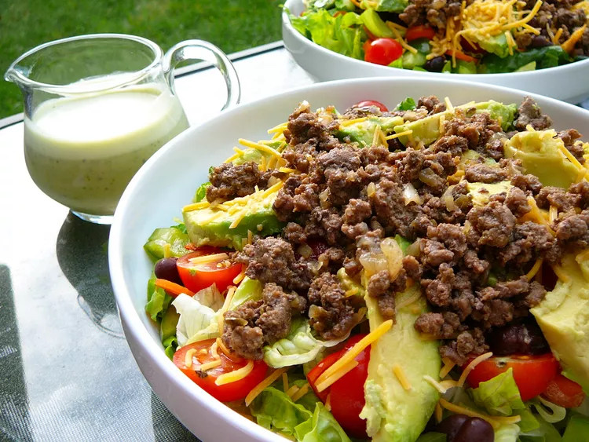

Taco Salad with Lime Vinegar Dressing

This taco salad is a fresh and flavorful dish perfect for lunch or dinner. The lime vinegar dressing adds a zesty kick that complements the ingredients beautifully.
Serves: 4
Preparation time: 20 minutes
Cooking time: 10 minutes
Difficulty: Easy
Category: Salad
Author: Ernest
Date: 2023-10-01
Source: Example Recipe Site
Home
Ingredients
- 1 lb ground beef
- 1 packet taco seasoning
- 1 head of lettuce, chopped
- 1 cup cherry tomatoes, halved
- 1 cup shredded cheese (cheddar or Mexican blend)
- 1 can black beans, rinsed and drained
- 1 avocado, diced
- 1/2 cup sour cream
- 1/4 cup salsa
Lime Vinegar Dressing
- Juice of 2 limes
- 1/4 cup olive oil
- 2 tablespoons apple cider vinegar
- Salt and pepper to taste
Instructions
- In a skillet over medium heat, cook the ground beef until browned. Drain excess fat.
- Add taco seasoning to the beef and follow package instructions.
- In a large bowl, combine lettuce, tomatoes, cheese, black beans, and avocado.
- Add the cooked beef to the salad mixture.
- In a small bowl, whisk together lime juice, olive oil, apple cider vinegar, salt, and pepper.
- Drizzle the dressing over the salad and toss gently to combine.
- Serve with sour cream and salsa on the side.